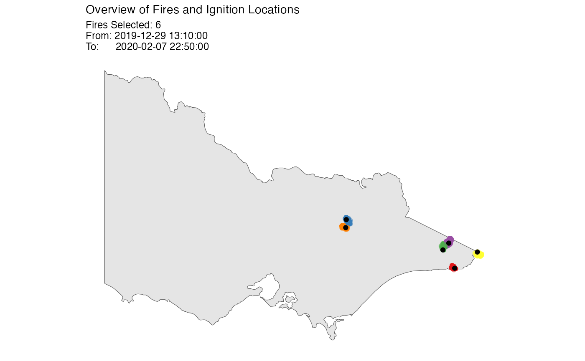

The hot spot data, or the Moderate Resolution Imaging Spectroradiometer (MODIS) hot spot data, is usually taken from satellite for burning fire detection. An example of this kind of data is the Himawari-8 Wild Fire product provided by the Japan Aerospace Exploration Agency (JAXA).
This vignette shows you how to cluster satellite hot spots, detect ignition points and reconstruct fire movement using the spotoroo package.
Load the spotoroo package using the library() function.
Data requirements
In order to use the spatiotemporal clustering algorithm provided by the spotoroo package, the satellite hot spot data needs to be stored in a list which have at least three fields: the observed time, the longitude and the latitude.
The observed time needs to be an object inherited from one of these classes:
DatePOSIXltPOSIXctnumeric
Besides, the longitude and the latitude needs to be in numeric.
Using the built-in dataset hotspots as an example, it is a data.frame with a lon (longitude) numeric column, a lat (latitude) numeric column and a obsTime (observed time) POSIXct column.
str(hotspots)
#> 'data.frame': 1070 obs. of 3 variables:
#> $ lon : num 147 146 143 149 142 ...
#> $ lat : num -37.5 -37.9 -37.8 -37.4 -37.1 ...
#> $ obsTime: POSIXct, format: "2020-02-01 05:20:00" "2020-01-02 06:30:00" ...This dataset contains 1070 selected hot spots in Victoria (Australia) during the 2019-2020 Australian bushfire season. More details about this dataset can be found by using the function help(hotspots)
Overview of the hot spot data
A common way to get a better understanding of the hot spot data is to visualize it. This package provides a function plot_vic_map() (package sf needs to be installed) to draw a map of Victoria. It returns a ggplot object, so new layers could be added onto it. Here we use geom_point() to draw red dots for hot spots.
From the map, we observe that there are approximately \(4\) clusters, but we don’t know if they can be further broken down into more clusters. Our goal is to cluster these hot spots into fires in a temporal and spatial manner.
library(ggplot2)
if (requireNamespace("sf", quietly = TRUE)) {
plot_vic_map() +
geom_point(data = hotspots, aes(lon, lat), col = "red")
}
If you would like to visualize the hot spots in other areas, you might be able to find the spatial data from the rnaturalearth package and make a similar map using the geom_sf() and ggthemes::theme_map() function. An example is given below.
Spatiotemporal clustering of hot spot
hotspot_cluster() is the main function of this package. In most of the cases, you only need to use this function to perform the spatiotemporal clustering algorithm.
Arguments
This function has \(11\) arguments, which can be divided into four categories:
1. specifications of the dataset
| Arguments | Description |
|---|---|
hotspots |
the object that contains the dataset |
lon |
the name of the longitude column |
lat |
the name of the latitude column |
obsTime |
the name of the observed time column |
The first four arguments are pretty straight forward, you only need to provide the dataset object and its corresponding column names.
2. specifications of the parameters of the clustering algorithm
| Arguments | Description |
|---|---|
activeTime |
the time tolerance |
adjDist |
the distance tolerance |
minPts |
the minimum number of hot spots |
minTime |
the minimum length of time |
These four arguments control the clustering process.
activeTimecould be interpreted as the time a fire can stay smouldering but undetectable by satellite before flaring up again. For example, ifactiveTime\(= 24\), then the time tolerance is \(24\) time indexes.adjDistcould be interpreted as the maximum intra-cluster distance between a hot spot and its nearest hot spot. For example, ifadjDist\(= 3\), then the distance tolerance is \(3\) km. However, in some very special cases, the intra-cluster distance between a hot spot and its nearest hot spot will exceed this threshold. You can learn more about this parameter and the algorithm by using thehelp(hotspot_cluster)function.minPtsis the minimum number of hot spots in a cluster. For example, ifminPtsis \(4\), then any cluster with less than \(4\) hot spots will be treated as noise.minTimeis the minimum length of time of a cluster. For example, ifminTimeis \(3\), then any cluster lasts shorter than \(3\) time indexes will be treated as noise.
In practice, we usually don’t have knowledge about the parameters activeTime and adjDist, but in general, the number of clusters will decrease when you increase these two parameters.
Comparing the clustering results under different settings is an available method to determine these two parameters. We will show how to do this in the section Additional topic: Choice of parameters.
In terms of minPts and minTime, they depend on your personal preference of noise reduction. And, the number of clusters will often decrease when you increase these two parameters.
A sensible choice of these two parameters is minPts \(\in [3,10]\) and minTime \(\in [1~hour, 12~hours]\)
3. specification of the calculation of the ignition points
| Arguments | Description |
|---|---|
ignitionCenter |
method of the calculation of the ignition points |
For a cluster, if ignitionCenter is “mean”, the centroid of the earliest hot spots will be used as the ignition point, if ignitionCenter is “median”, the median longitude and the median latitude of these hot spots will be used as the ignition point.
In usual, there is no significant difference between these two methods, so we recommend to set ignitionCenter = "mean".
4. specifications of the transformation of the observed time
| Arguments | Description |
|---|---|
timeUnit |
the unit of time |
timeStep |
the number of time unit one time index contains |
Due to the design of the algorithm, the observed time needs to be transformed to discrete time index. Available time units are “d” (days), “h” (hours), “m” (minutes), “s” (seconds) and “n” (numeric). timeUnit = "n" will only be accepted when the observed time is already a numeric vector.
For example, if timeUnit is “h” and timeStep is \(2\), then the difference between time index \(1\) and time index \(2\) is \(2\) hours.
Usage
With specifications of all the arguments, the hotspot_cluster() can be used as below. Generally, you need to use an object to catch the return.
result <- hotspot_cluster(hotspots = hotspots,
lon = "lon",
lat = "lat",
obsTime = "obsTime",
activeTime = 24,
adjDist = 3000,
minPts = 4,
minTime = 3,
ignitionCenter = "mean",
timeUnit = "h",
timeStep = 1)
#>
#> ──────────────────────────────── SPOTOROO 0.1.2 ────────────────────────────────
#>
#> ── Calling Core Function : `hotspot_cluster()` ──
#>
#> ── "1" time index = 1 hour
#> ✓ Transform observed time → time indexes
#> ℹ 970 time indexes found
#>
#> ── activeTime = 24 time indexes | adjDist = 3000 meters
#> ✓ Cluster
#> ℹ 16 clusters found (including noise)
#>
#> ── minPts = 4 hot spots | minTime = 3 time indexes
#> ✓ Handle noise
#> ℹ 6 clusters left
#> ℹ noise proportion : 0.935 %
#>
#> ── ignitionCenter = "mean"
#> ✓ Compute ignition points for clusters
#> ℹ average hot spots : 176.7
#> ℹ average duration : 131.9 hours
#>
#> ── Time taken = 0 mins 1 sec for 1070 hot spots
#> ℹ 0.001 secs per hot spot
#>
#> ────────────────────────────────────────────────────────────────────────────────Messages produced by this function tell you some important information of the clustering results such as the number of discrete time indexes, the number of clusters and the proportion of noise. If you would like to silent this function, you could wrap this function with the suppressMessages() function like the example given below.
# NOT RUN
suppressMessages(hotspot_cluster())Returns
The hotspot_cluster() function returns a spotoroo object, which is actually a list contains a data.frame called hotpsots, a data.frame called ignition and a list called setting.
If you evaluate the result or print it, you will get a concise description of the clustering results. Here, according to the output, we know there are \(6\) clusters in the clustering results.
result
#> ℹ spotoroo object: 6 clusters | 1070 hot spots (including noise points)You can access these two data.frames in the usual way.
head(result$hotspots, 2)
#> lon lat obsTime timeID membership noise distToIgnition
#> 1 147.46 -37.46000 2020-02-01 05:20:00 809 -1 TRUE 0
#> 2 146.48 -37.93999 2020-01-02 06:30:00 90 -1 TRUE 0
#> distToIgnitionUnit timeFromIgnition timeFromIgnitionUnit
#> 1 m 0 hours h
#> 2 m 0 hours h
head(result$ignition, 2)
#> membership lon lat obsTime timeID obsInCluster
#> 1 1 149.30 -37.77 2019-12-29 13:10:00 1 146
#> 2 2 146.72 -36.84 2020-01-08 01:40:00 229 165
#> clusterTimeLen clusterTimeLenUnit
#> 1 116.1667 hours h
#> 2 148.3333 hours hThe hotspots dataset contains information of each hot spot. Particularly, the membership column is the membership label column. \(-1\) represents noise.
The ignition dataset contains information of each cluster. Similarly, the membership column is the membership label column. And the lon and lat are the coordinate information of the ignition points.
Extract a subset of clusters
If you would like to extract a subset of clusters from the results or merge the hotspots and ignition dataset, you could use the function extract_fire().
You could choose to extract all clusters along with noise points by setting cluster = "all" and noise = TRUE. This will merge the hotspots and ignition dataset.
# Merge the `hotspots` and `ignition` dataset
merged_result <- extract_fire(result, cluster = "all", noise = TRUE)You could also only extract a subset of clusters without any noise by providing a vector of membership labels to the argument cluster and set noise = FALSE. This will merge the hotspots and ignitoin dataset but filtering out the noise points and selecting needed clusters.
# Merge the `hotspots` and `ignition` dataset
# Select cluster 2 and 3 and filter out noise
cluster_2_and_3 <- extract_fire(result, cluster = c(2, 3), noise = FALSE)Additional topic: Choice of parameters
In principal, the parameters activeTime and adjDist are determined using the professional knowledge of fire behaviour, but in practice, we generally don’t know much about them.
In the rest of the section, we will show one of the methods to choose proper values for these two parameters.
We first set minPts = 4 and minTime = 3. You could set different values for minPts and minTime if you like.
We then could do a grid search for activeTime and adjDist in a sensible range. Here, we set adjDist \(\in\) [500,1000,1500,2000,2500,3000,3500,4000] and activeTime \(\in\) [6,12,18,24,30,36,42,48]. For each pair of activeTime and adjDist, we record the proportion of noise as the metric for comparison.
The following code does the calculation. It may takes around 10 minutes to run. You could have a try if you like.
# NOT RUN
# NOTICE: MAY TAKE AROUND 10 MINS TO RUN THIS CODE BLOCK
noise_prop <- c()
for (adjDist in seq(500, 4000, 500)) {
for (activeTime in seq(6, 48, 6)) {
result <- suppressMessages(hotspot_cluster(hotspots = hotspots,
lon = "lon",
lat = "lat",
obsTime = "obsTime",
activeTime = activeTime,
adjDist = adjDist,
minPts = 4,
minTime = 3,
ignitionCenter = "mean",
timeUnit = "h",
timeStep = 1))
noise_prop <- c(noise_prop, mean(result$hotspots$noise))
}
}
tab <- expand.grid(activeTime = seq(6, 48, 6),
adjDist = seq(500, 4000, 500))
tab$noise_prop <- noise_propWith the proportion of noise, we could make two line plots to reveal the relationships between proportion of noise, adjDist and activeTime.
It works like the scree plot used in principal component analysis. We want to keep clusters separate without introducing too much noise.
In the first plot, most of the significant drops of proportion of noise are observed when adjDist less than 2500 metres. Therefore, adjDist = 2500 is a reasonable choice.
ggplot(tab) +
geom_line(aes(adjDist, noise_prop, color = as.factor(activeTime))) +
ylab("Noise Propotion") +
labs(col = "activeTime") +
theme_minimal() +
scale_x_continuous(breaks = seq(500, 4000, 500))
In the second plot, most of the significant drops of proportion of noise are observed when activeTime less than 24 hours. Therefore, activeTime = 24 is a reasonable choice.
ggplot(tab) +
geom_line(aes(activeTime, noise_prop, color = as.factor(adjDist))) +
ylab("Noise Propotion") +
labs(col = "adjDist") +
theme_minimal() +
scale_x_continuous(breaks = seq(6, 48, 6))
Exploring the spatiotemporal clustering results
The package provides some useful functions to explore the clustering results.
Summary
You could make a brief summary of the clustering results.
summary_spotoroo(result)
#>
#> ──────────────────────────────── SPOTOROO 0.1.2 ────────────────────────────────
#>
#> ── Calling Core Function : `summary_spotoroo()` ──
#>
#> CLUSTERS: ALL
#> OBSERVATIONS: 1070
#> FROM: 2019-12-29 13:10:00
#> TO: 2020-02-07 22:50:00
#>
#> ── Clusters
#> ℹ Number of clusters: 6
#>
#> Observations in cluster
#> Min. 1st Qu. Mean 3rd Qu. Max.
#> 111.0 131.0 176.7 233.2 256.0
#> Duration of cluster (hours)
#> Min. 1st Qu. Mean 3rd Qu. Max.
#> 111.2 118.2 131.9 146.1 148.3
#>
#> ── Hot spots (excluding noise)
#> ℹ Number of hot spots: 1060
#>
#> Distance to ignition points (m)
#> Min. 1st Qu. Mean 3rd Qu. Max.
#> 0.0 2840.3 5058.2 6981.6 13452.7
#> Time from ignition (hours)
#> Min. 1st Qu. Mean 3rd Qu. Max.
#> 0.0 25.2 62.5 98.2 148.3
#>
#> ── Noise
#> ℹ Number of noise points: 10 (0.93 %)
#>
#> ────────────────────────────────────────────────────────────────────────────────Or make a brief summary of a subset of clusters by providing a vector of membership labels to the cluster argument.
summary_spotoroo(result, cluster = c(1, 3, 4))Called by summary()
For convenience, the summary_spotoroo() can be called by the summary() function.
Plot
You could produce a plot of the clustering results. There are three types of plots, which are “def” (default), “mov” (fire movement) and “timeline” (timeline).
Default
plot_spotoroo(result, type = "def")Fire movement
The fire movement is calculated from the get_fire_mov() function.
plot_spotoroo(result, type = "mov", step = 6)
Add a background
If you have a background ggplot object, you can let the function plots onto it.
if (requireNamespace("sf", quietly = TRUE)) {
plot_spotoroo(result, bg = plot_vic_map())
}
if (requireNamespace("sf", quietly = TRUE)) {
plot_spotoroo(result, type = "mov", bg = plot_vic_map(), step = 6)
}More details about the usage of this function can be found by using the help(plot_spotoroo) function.
Called by plot()
For convenience, the plot_spotoroo() can be called by the plot() function.
plot(result)
plot(result, type = "timeline")
plot(result, type = "mov")
plot(result, bg = plot_vic_map())
plot(result, type = "mov", bg = plot_vic_map())